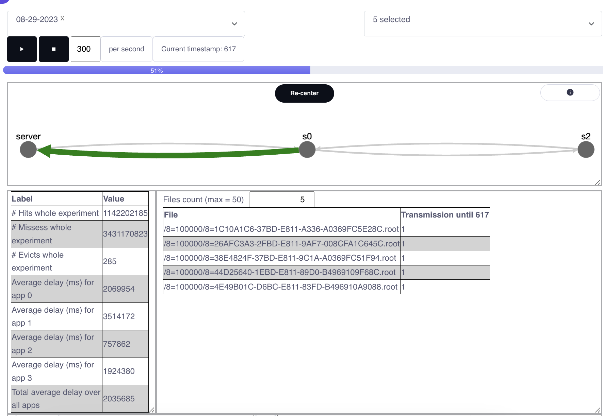
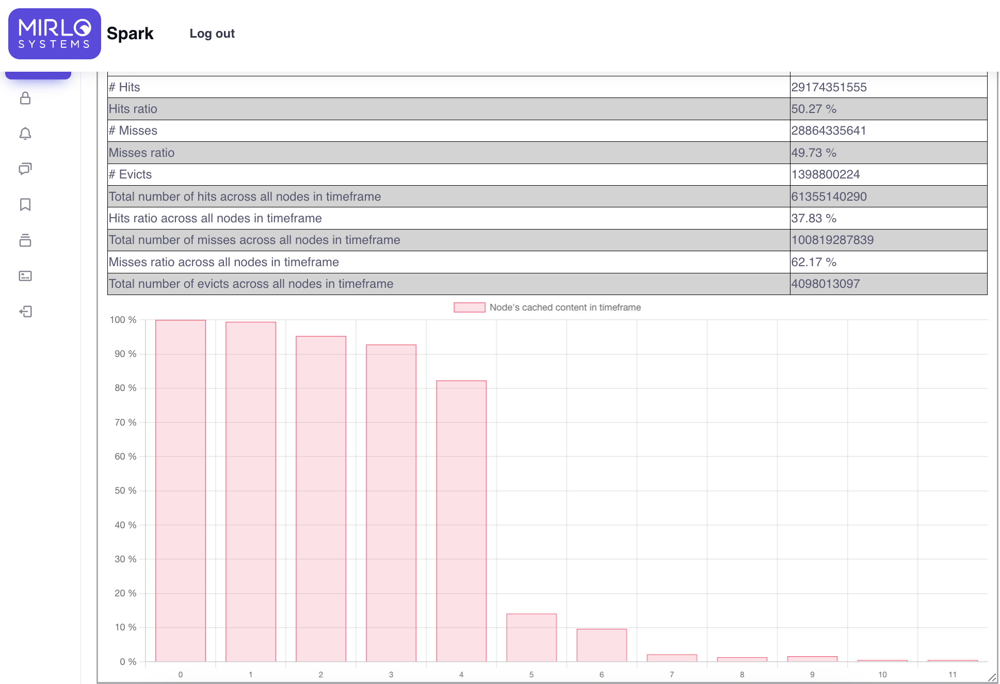

North Eastern University
In this project, a professor and his team of students were conducting experiments on different networks, and were interested in showing their results to other teams. They wanted to compare their algorithms to others, in terms of different variables: throughput, latency, and cached data.
Overview
A web application was developed for system users to be able to select the experiment(s) to see reflected and they would have the information for the experiment displayed in different graphs and tables.
Also, a graph with nodes and edges representing computers and connections respectively was drawn using the `cytoscape` library, and upon an element selection the information associated to it would be displayed (like cached data in a specific node).
The experiments' data could be either uploaded directly loading the JSON in github, or to a database that was pulled when loading the page.
Github
Article
Frontend
React, HTML, CSS, JS, graphs libraries (Chart.js, apexchart, cytoscape)
Backend
Python, Django
Database
Redis
 